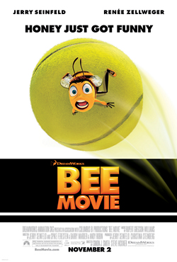
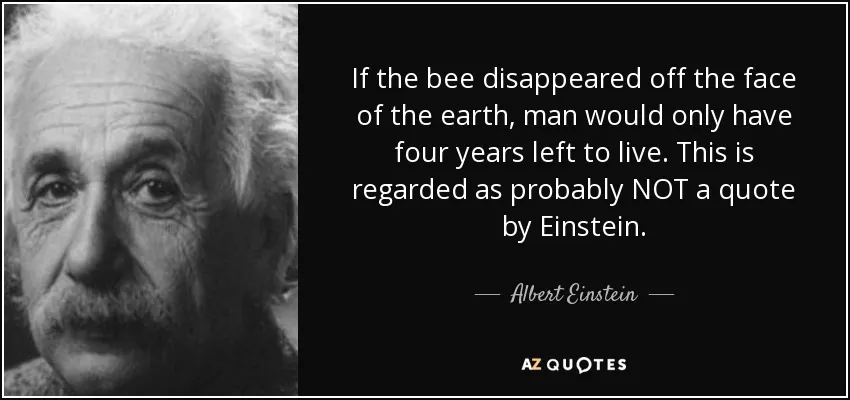

Our mission is to spread the joy of the Bee Movie and the importance of bees to the world.
Founded by passionate students of CS410 at UMass-Boston, BeeHive is a community-driven initiative focused on empowering learners and creators in the tech space. Just like bees work hard to pollinate flowers and give us honey, we strive to cultivate joy about the Bee Movie.
Bees play a crucial role in our ecosystem by pollinating plants, which helps produce the food we eat. They are essential for biodiversity and the health of our environment. By promoting awareness about bees and their importance, we hope to inspire others to appreciate and protect these incredible creatures. The Bee Movie serves as a fun and engaging way to highlight the significance of bees in our world.
Though this quote is most likely not said by Einstein there is truth behind this quote due to the importance bees have in the polination process.